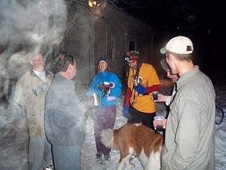
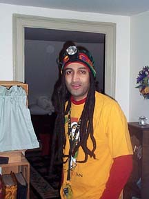
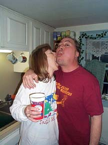
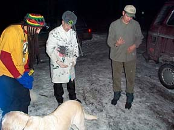
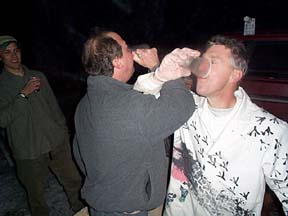

Run # 767 January 22, 2001
Hare: Little Neck
Write-up by: Oozing
The Start: Stinkin' Lincoln

Twas another lovely cold eve with lots of snow around and expectations high for another rollicking hash as we all gathered at the necksters abode 'neath the newly reconstructed Rt. 116 bridge. We were to be disappointed. Hashers that gathered incl. Bondo, Basket, WIPOS, Async, Suck the Clam,Dr Who Slasher, Blew Bondo, the horny trio of Jake,Ben and Baxter and of course yours truly (er, Oozing if you didn't figure it out). Little Neck was the sorry hare.

Little Neck's date for the evening
As the hare set us off on the trail, Bondo set off in the opposite direction. To the untrained eye, this may have been interpreted as oppositional, or the need to assert his own identity or merely obstinate. However the sad truth is he's plain daft and just can't comprehend simple instructions and that's why he has two "guide dogs" to help him! Some hashers chose to ski and were soon in the lead negotiating all too familiar terrain, leading the pack up a hill, around some trees, across a road blah blah and around and back to the Necker's abode (actually I made it sound longer and more exciting than the trail really was!)

Shine On helping to remove a boil from Little Neck's neck

Swinging Low in front of the Grandmaster
Bondo was lost for awhile and WIPOS, to the dismay of none, was nowhere to be seen. Beer and singing ensued, and down downs for the hares Lil' Neck and Basket (who had nothing to do with the trail), the absentee hashit (Async) and ONON at the house. Despite the tasty food and good beer, Necker's better half was conspicuously absent. At least one of them showed creativity by taking off! As usual, much reminiscing about past hashes followed, probably because not much to say about today's hash, despite the fact I've bullshitted about it for far too long. Oh, and to make matters worse, Wipos returned. On On...the scribe.

The hares receiving their punishment